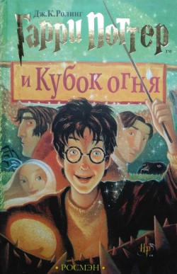

Каталог
Гарри Поттер и Философский камень
Алохомора! Открывайте дверь в мир волшебства вместе с Джоан Роулинг!
Гарри Поттер - одиннадцатилетний мальчик, который растет в обычной семье и даже не подозревает, что он - настоящий волшебник. Однажды прилетает сова с письмом для него, и жизнь Гарри изменяется навсегда. Он узнает, что зачислен в Школу Чародейства и Волшебства, узнает правду о загадочной смерти своих родителей, а в результате раскрывает секрет филосовского камня.
Гарри Поттер - одиннадцатилетний мальчик, который растет в обычной семье и даже не подозревает, что он - настоящий волшебник. Однажды прилетает сова с письмом для него, и жизнь Гарри изменяется навсегда. Он узнает, что зачислен в Школу Чародейства и Волшебства, узнает правду о загадочной смерти своих родителей, а в результате раскрывает секрет филосовского камня.
Подробнее
Гарри Поттер и Тайная комната
Это второй год учебы Гарри Поттера в Хогвартсе.
Он с головой уходит в изучение ядов, заклятий, способов защиты от темных сил и тонкостей «квиддича» – игры, в которую играют в воздухе на метлах. И вдруг Гарри начинает слышать странные голоса, а на стене появляются таинственные надписи.
Он с головой уходит в изучение ядов, заклятий, способов защиты от темных сил и тонкостей «квиддича» – игры, в которую играют в воздухе на метлах. И вдруг Гарри начинает слышать странные голоса, а на стене появляются таинственные надписи.
Подробнее

Гарри Поттер и узник Азкабана
Двенадцать долгих лет в Азкабане - мрачной тюрьме волшебного мира - содержался всем известный узник по имени Сириус Блэк.
Его обвиняли в убийстве тринадцати человек и считали наследником лорда Волан-де Морта.
И вот он бежал, и из оставленных им следов ясно, что на этот раз убийца поставил целью избавиться от Гарри Поттера. Теперь Гарри в опасности, даже за стенами соей волшебной школы, даже среди друзей - потому что среди них есть предатель, готовый открыть убийце путь в Хогвартс.
И вот он бежал, и из оставленных им следов ясно, что на этот раз убийца поставил целью избавиться от Гарри Поттера. Теперь Гарри в опасности, даже за стенами соей волшебной школы, даже среди друзей - потому что среди них есть предатель, готовый открыть убийце путь в Хогвартс.
Подробнее

Гарри Поттер и Кубок Огня
Гарри Поттеру предстоит четвертый год обучения в Школе чародейства и волшебства “Хогвартс”.
Новые заклинания, новые зелья, новые учителя, новые предметы… Все это знакомо, и Гарри с нетерпением ожидает начала учебного года.
Но на школу внезапно обрушивается потрясающая новость: в этом году в Хогвартсе будет проходить Турнир Трех Волшебников, и конечно же, каждый хочет принять в нем участие.
Новые заклинания, новые зелья, новые учителя, новые предметы… Все это знакомо, и Гарри с нетерпением ожидает начала учебного года.
Но на школу внезапно обрушивается потрясающая новость: в этом году в Хогвартсе будет проходить Турнир Трех Волшебников, и конечно же, каждый хочет принять в нем участие.
Подробнее

Гарри Поттер и Орден Феникса
Гарри Поттер с нетерпением ждет окончание каникул и начала пятого учебного года в Хогвартсе.
Юный волшебник как никогда страдает от одиночества, а насмешки и придирки Дурслей стали совсем невыносимы.
К тому же он уверен, что Волан-де-Морт возродился и скоро начнет действовать. Вас снова ждут опасные и захватывающие приключения, жестокая борьба, верные друзья и волшебный мир Гарри Поттера.
Юный волшебник как никогда страдает от одиночества, а насмешки и придирки Дурслей стали совсем невыносимы.
К тому же он уверен, что Волан-де-Морт возродился и скоро начнет действовать. Вас снова ждут опасные и захватывающие приключения, жестокая борьба, верные друзья и волшебный мир Гарри Поттера.
Подробнее
Гарри Поттер и Принц-полукровка
Министерство магии терпит поражение за поражением в битвах с Волан-де-Мортом.
Даже маглы страдают от второй войны - каждый день происходят катастрофы, причины которых никому не ведомы.
Орден Феникса теряет в сражениях с Пожирателями смерти своих лучших волшебников.
Но и на войне жизнь продолжается. Гарри, Рон и Гермиона, как и все шестнадцатилетние, учатся, ходят на вечеринки и влюбляются.
Однако опасность все ближе и ближе. Несмотря на все усилия Дамблдора по защите школы, в Хогвартсе происходят очень странные события. Омут памяти на этот раз откроет Гарри самую большую тайну Темного Лорда, и ради того, чтобы победить, Гарри вынужден будет пожертвовать самым дорогим...
Какую же сторону в этой войне примет загадочный Принц-полукровка?
Даже маглы страдают от второй войны - каждый день происходят катастрофы, причины которых никому не ведомы.
Орден Феникса теряет в сражениях с Пожирателями смерти своих лучших волшебников.
Но и на войне жизнь продолжается. Гарри, Рон и Гермиона, как и все шестнадцатилетние, учатся, ходят на вечеринки и влюбляются.
Однако опасность все ближе и ближе. Несмотря на все усилия Дамблдора по защите школы, в Хогвартсе происходят очень странные события. Омут памяти на этот раз откроет Гарри самую большую тайну Темного Лорда, и ради того, чтобы победить, Гарри вынужден будет пожертвовать самым дорогим...
Какую же сторону в этой войне примет загадочный Принц-полукровка?
Подробнее

Гарри Поттер и Дары Смерти
Гарри Поттера ждет самое страшное испытание в жизни - смертельная схватка с Волан-де-Мортом.
Ждать помощи не от кого - Гарри одинок, как никогда... Друзья и враги Гарри предстают в совершенно неожиданном свете. Граница между Добром и Злом становится все призрачнее...
Ждать помощи не от кого - Гарри одинок, как никогда... Друзья и враги Гарри предстают в совершенно неожиданном свете. Граница между Добром и Злом становится все призрачнее...